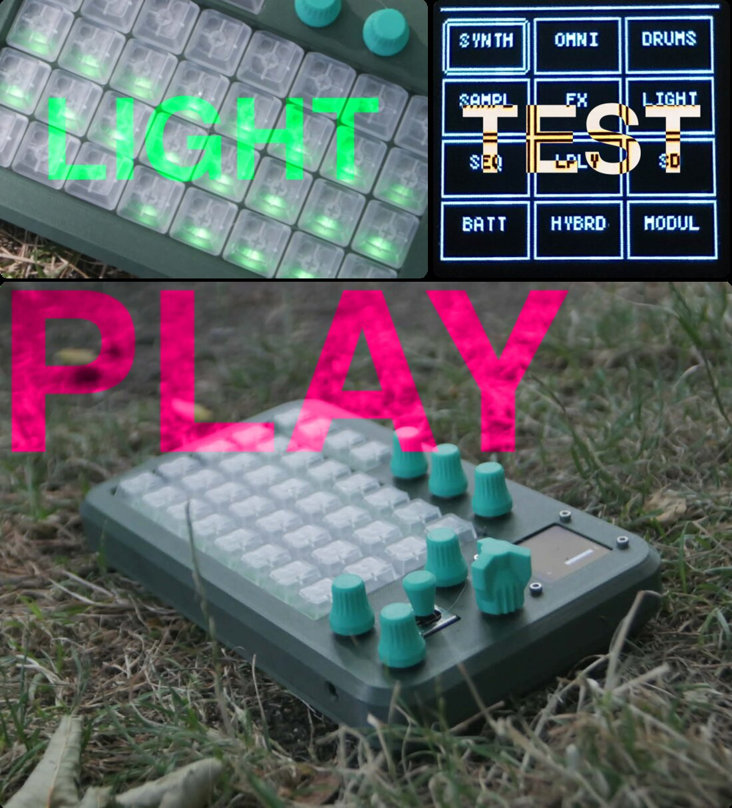

ESP32-S3 · open source · firmware + simulateur
Boîte à rythmes / synthétiseur basée sur un ESP32-S3 : plus de 30 modes (séquenceurs de drums, synthés subtractif/FM/wavetable/TB-303/granulaire/ échantillonneur, modes génératifs), lecture de samples SD, écran OLED, clavier 32 touches, joystick, 7 potentiomètres, LEDs adressables.

Fonctions
Chaque mode partage le même moteur audio (AMY), la même chaîne d'effets et les mêmes conventions d'interface — changer de mode, c'est changer d'instrument, pas de machine.
SÉQUENCEURS
Séquenceurs de percussions (DRUM2, DR2, BREAK, FELU...), MODE_GROOVE (drums/synthé/303 sur une seule grille), MODE_EUCLI (rythmes euclidiens polymétriques), MODE_CRUNCH (tracker 4 pistes façon MothOS).
SYNTHÉS
Synthé subtractif multi-oscillateur, FM, wavetable (MODULAR, 2 oscillateurs sur wavetables AMY), émulation TB-303 (303S/I303), granulaire, lecteur de samples SD.
GÉNÉRATIF
Automate cellulaire (LIFE, Jeu de la vie sur la grille), essaim de boids (SWARM), thérémine, physique de balles, ambiances génératives.
EFFETS
Delay, reverb, chorus, filtres LPF/HPF/BPF/LADDER à résonance élargie, "FX punch" multi-touches instantané, LFO assignable à n'importe quel paramètre d'effet.
MATÉRIEL
OLED, clavier de 32 touches (4×8), joystick 2 axes + clic, 7 potentiomètres, LEDs adressables (FastLED) pour un retour visuel immédiat sur chaque mode.
PORTABILITÉ
ESP32-S3 réel, simulateur desktop Linux/Windows (SDL2), APK Android natif,
et ce simulateur web (WebAssembly) — un seul code applicatif (src/).
Simulateur navigateur
Même code C++ que le firmware ESP32 et le simulateur desktop, compilé en WebAssembly. Pas de carte SD, pas de MP3, pas de MIDI USB dans cette version — pour ça, voir les builds natifs plus bas.
Clavier physique : touches 1-8 / Q..I / A..K / Z..M, pour les notes, F1-F4 pour B1-B4, flèches pour le joystick, Entrée/Espace pour son clic. Un premier clic sur une touche ou le joystick est nécessaire pour démarrer l'audio (politique autoplay des navigateurs).
Build
Le détail complet (flashage, releases, cross-compilation Windows, APK Android) est dans le README du dépôt.
pio run -e esp32-s3-devkitc-1 -t upload pio run -e esp32-s3-devkitc-1 -t monitor
Via PlatformIO. Configuration (partitions
16MB, PSRAM, USB MIDI) dans platformio.ini.
cd simulator && ./build.sh DISPLAY=:1 ./build/grvep_sim
SDL2 — écran, clavier, joystick et LEDs simulées, plus un spectrogramme et
une courbe EQ temps réel. build_windows.sh pour un .exe
autonome via MinGW-w64.
cd android-native && ./setup_android.sh cd .. && ./build_native_apk.sh --install
Le même simulateur SDL2, compilé nativement en C++ (pas de WebView). APK déjà compilé : releases/GrvEP.apk.
cd web && ./build.sh
Ce que vous testez juste au-dessus — via Emscripten + Audio Worklets. Détails dans structure/WEB_SIMULATOR.md.